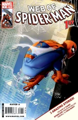
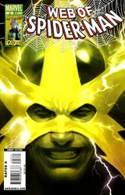
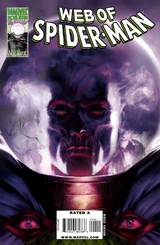
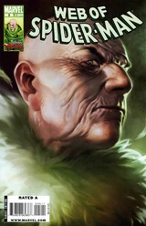
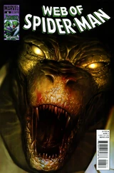
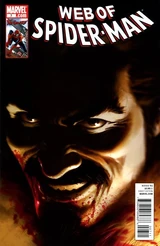
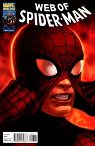
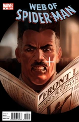
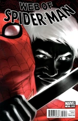
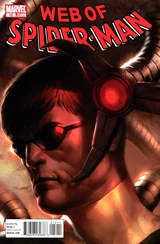

Web of Spider-Man Vol 2 (2009 - 2010)
| Comic Book | Release Date | Cover |
|---|---|---|
| Web of Spider-Man Vol 2 #1 Echoes |  | |
| Web of Spider-Man Vol 2 #2 Gauntlet Origins: Electro |  | |
| Web of Spider-Man Vol 2 #3 Gauntlet Origins: Rhino | ||
| Web of Spider-Man Vol 2 #4 Gauntlet Origins: Mysterio |  | |
| Web of Spider-Man Vol 2 #5 Gauntlet Origins: Vulture |  | |
| Web of Spider-Man Vol 2 #6 Gauntlet Origins: Lizard |  | |
| Web of Spider-Man Vol 2 #7 Bride of the Hunter |  | |
| Web of Spider-Man Vol 2 #8 The Extremist: Part 1 |  | |
| Web of Spider-Man Vol 2 #9 The Extremist: Part 2 |  | |
| Web of Spider-Man Vol 2 #10 The Extremist: Conclusion |  | |
| Web of Spider-Man Vol 2 #11 The Ex-Terminators: Part 1 | ||
| Web of Spider-Man Vol 2 #12 The Ex-Terminators, part 2 |  |